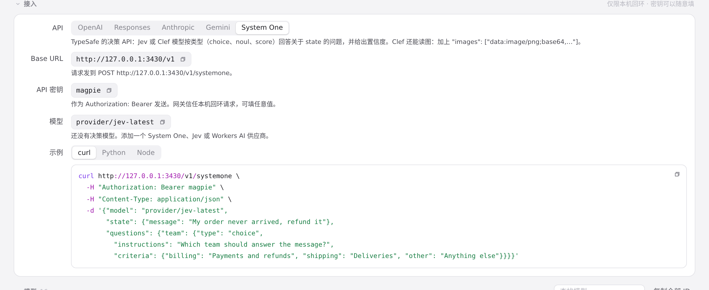
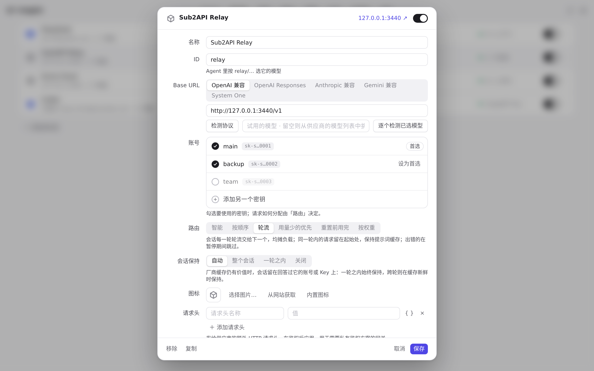

#1282 界面预览
commit 6dbe341 · 回到 PR · 这个 PR 让 remote-magpie 供应商从远端发现显式标记的决策模型（kind: decision），并把 System One 请求转发给它们；供应商编辑面板收到的 deciders 列表改为显式（可为空），从而不再把名为 Jev Router 的对话模型猜成决策模型。界面本身没有新增文字、按钮或页面，变化只体现在已有页面的模型分类与 System One 示例模型上。
红线是鼠标走过的轨迹，红色圆环是一次点击；底部文字是这一步在做什么。空格暂停，← → 逐段查看。

网关页 System One 示例中的决策模型位置 · System One 下的模型字段与示例片段

供应商编辑面板里的模型列表 · Sub2API Relay 编辑面板里的模型列表